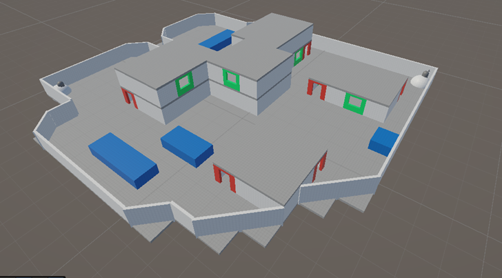
2026 Q2 · Dissertation Artefact
Procedural Map Generation for Competitive FPS Games
A Unity-based dissertation artefact investigating whether rule-based procedural generation can create small competitive 3D FPS maps that approach the perceived quality of manually designed maps.
Project overview
This project was my honours dissertation artefact. I built a playable Unity FPS prototype with three map modes: two manually made comparison maps and one procedurally generated map mode. The goal was not just to create random spaces, but to generate playable competitive FPS layouts using explicit design rules and validation checks.
The generator uses a constructive, rule-based pipeline. It creates a seeded walkable footprint, converts it into modular map geometry, places spawns, validates connectivity, adds buildings, doorways, stairs, windows, cover and vertical structure, then rejects layouts that fail minimum playability or flow constraints.
What I implemented
- Rule-based procedural generator: produced seeded 3D FPS map layouts through explicit construction rules rather than machine learning or search-based generation.
- Modular prefab pipeline: built reusable floors, walls, doors, stairs, windows, ceilings, cover blocks and spawn markers using Unity and ProBuilder.
- Walkable footprint generation: generated a reproducible ground-level footprint before converting it into playable geometry.
- Bitmask wall conversion: analysed neighbouring grid cells to automatically place walls, corners, floors and boundary geometry.
- Spawn placement: selected spawn points from the furthest valid walkable cells to reduce immediate unfair engagements.
- Validation system: rejected disconnected or poor-quality layouts using checks for connectivity, dead-end limits, excessive straight runs and general playability.
- FPS-specific layout features: added buildings, doorways, windows, verticality, stairs, indoor cover and exterior cover to control sightlines and route variety.
- Manual comparison maps: built two hand-authored maps using the same modular constraints so generated maps could be compared fairly.
- Multiplayer testing support: added host/client testing screens, map selection, health HUD, end-of-round flow and a best-of-three test structure.
- Evaluation workflow: collected survey and match-log data covering flow, fairness, route support, enjoyment, map identification, round duration and time to first engagement.
Technical focus
The strongest part of the artefact is the way FPS design principles were translated into procedural rules. Instead of only checking whether a map could be walked through, the system also considered map quality concerns: spawn separation, route choice, sightline control, cover placement, dead-end reduction and tactical readability.
The project also demonstrates an iterative development process. The generator began with basic walkable shapes, then evolved into a more complete system with building interiors, vertical routes, windows, door logic, cover distribution and reproducible seeded maps for participant testing.
Evaluation summary
The dissertation compared two manually constructed maps against three fixed-seed procedurally generated maps. The manual maps were generally rated more favourably for flow, enjoyment and overall ranking, but the procedural maps were often still judged as coherent, understandable and fair.
The most important result was that one procedural map performed close to the manual maps across several measures and was not easily recognised as procedural. This suggests that the rule-based approach can produce competitive FPS maps that approach manual quality, although consistency across generated seeds remains the main limitation.
Video demonstration
This video demonstrates the procedural generation artefact and the FPS prototype context used for testing.
Gallery
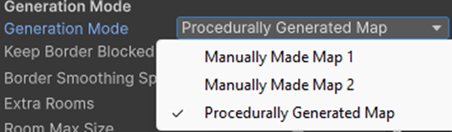
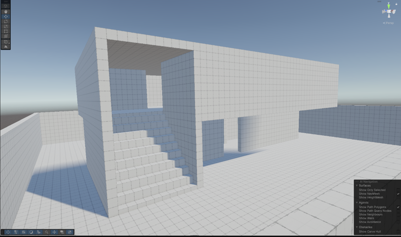
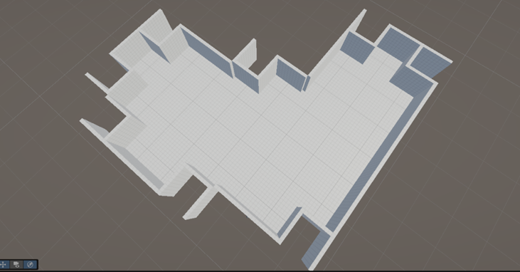
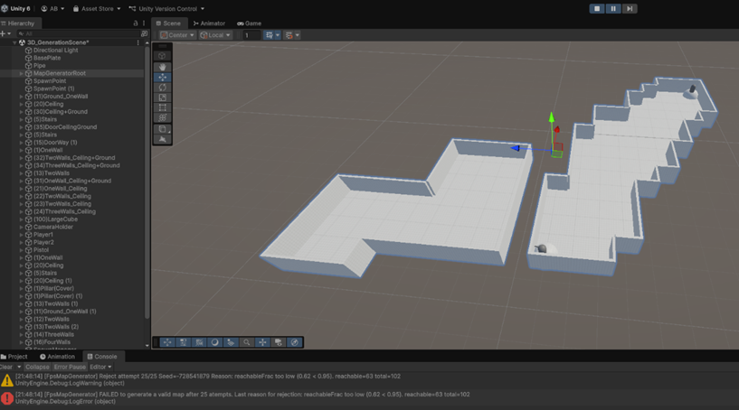
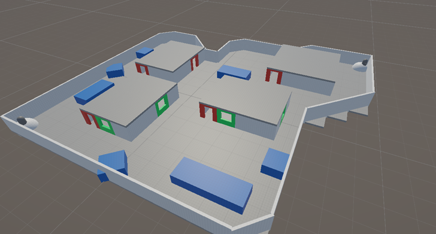
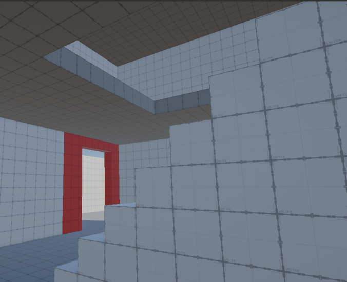
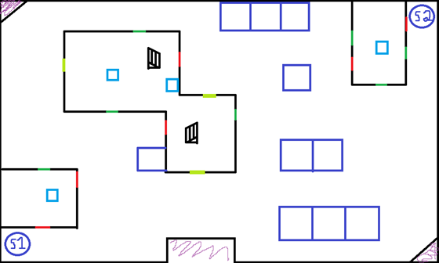
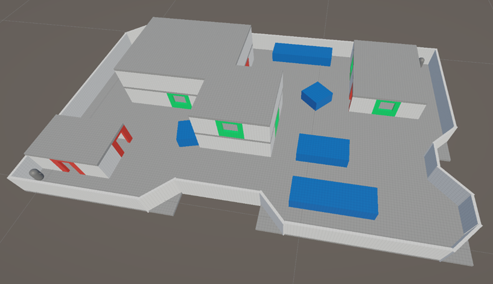
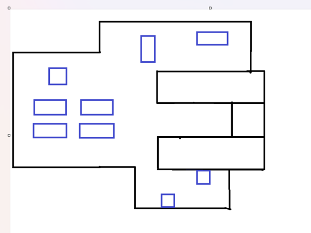
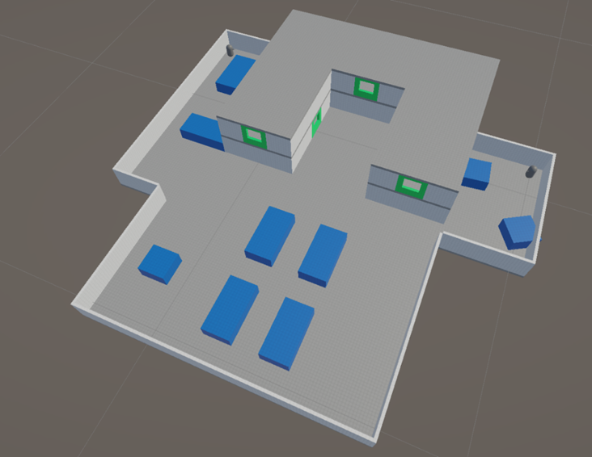
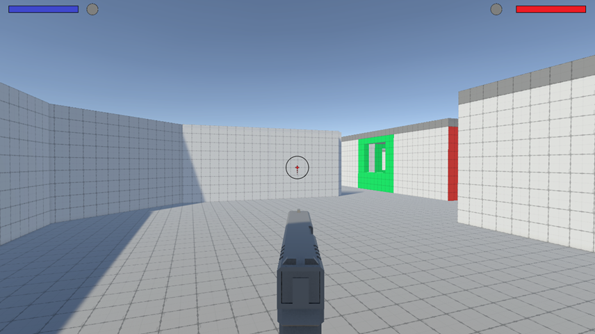
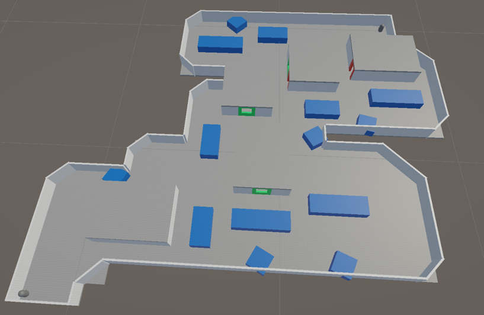
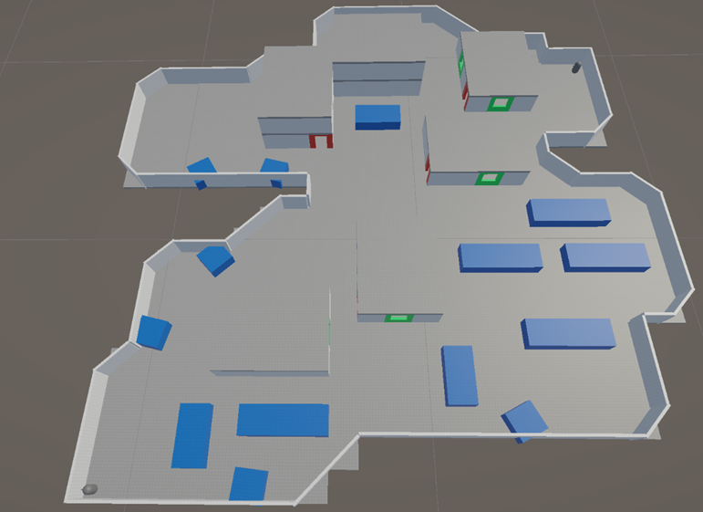
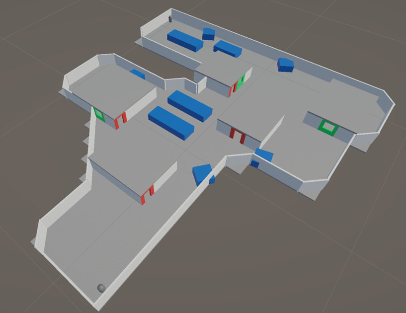